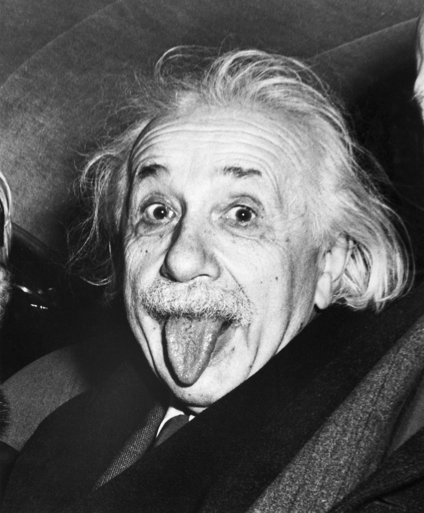

About me
Albert Einstein
Albert Einstein was a German mathematician and physicist who developed the special and general theories of relativity. In 1921, he won the Nobel Prize in Physics for his explanation of the photoelectric effect. In the following decade, he immigrated to the United States after being targeted by the German Nazi Party. His work also had a major impact on the development of atomic energy. In his later years, Einstein focused on unified field theory. He died in April 1955 at age 76. With his passion for inquiry, Einstein is generally considered the most influential physicist of the 20th century.
